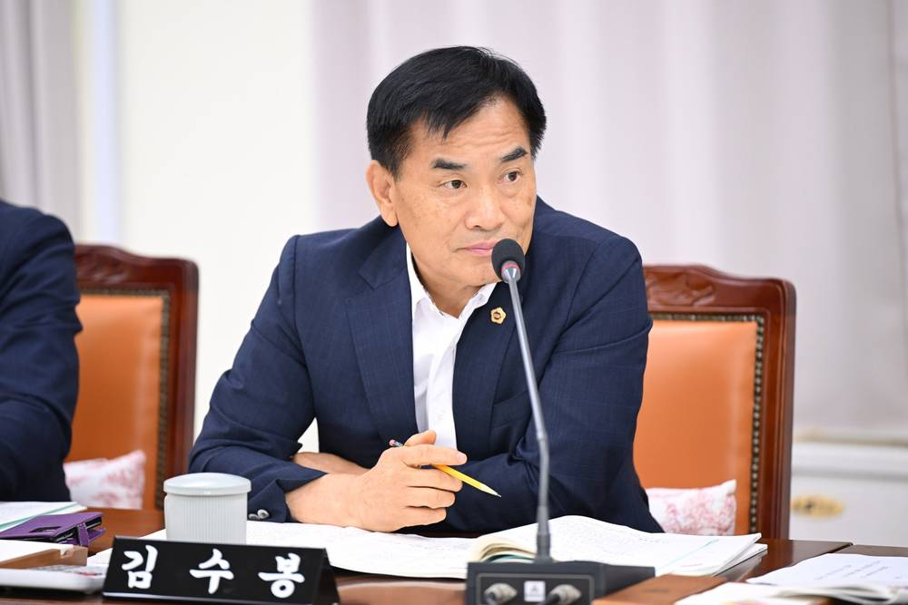

경남 채소화훼연구소 전기요금 72% 올라 식물공장 멈춰

연구소 산업용(을) 단가가 kWh당 105.5원에서 181.9원으로 오를 때 운영비는 7.3% 줄었다. 경남도의회가 19일 추경 심사에서 따졌다.
경남농업기술원 채소화훼연구소가 전기요금을 대지 못해 식물공장 2개동의 가동을 멈춘 것으로 확인됐다. 올해 네 번째 추가경정예산안을 다룬 19일 경상남도의회 농해양수산위원회 회의(제438회 정례회)에서 김수봉 의원(함안2)이 이 사실을 꺼냈다.
연구소가 내는 산업용(을) 요금은 1kWh에 105.5원이던 2021년과 견줘 지금 181.9원으로, 농업기술원이 의회에 낸 자료상 72.4% 비싸졌다. 거꾸로 연구소 살림인 공공운영비는 5억7,800만 원(2021년)→5억6,300만 원(2022년)→5억5,300만 원(2023년)→5억3,600만 원(2024년)으로 한 해도 빠짐없이 깎였고, 올해까지 더 늘지 않았다. 5년 전과 비교하면 쓸 수 있는 돈이 4,200만 원(약 7.3%) 적은 셈이다.
정부와 한국전력은 2024년 10월 24일부터 주택용·일반용 요금은 묶고 산업용만 평균 9.7% 올렸는데, 대용량 고객인 산업용(을)의 인상률은 10.2%였다. 한전은 당시 2022년 이후 6차례 요금을 올렸는데도 2021년부터 2024년 상반기까지 누적적자가 41조 원(연결)에 이른다고 설명했다.
이곳에는 시험연구 온실 30개동과 식물공장 2개동, 90㎡ 넓이의 육종 조직배양실이 있는데, 이 가운데 배양실과 식물공장은 사계절 같은 온도를 지키며 장비를 쉬지 않고 돌려야 한다. 겨울에는 전기보일러와 전기열선으로 온실을 덥히면서 전력 사용이 더 늘어난다. 경남도가 낸 이번 추경안에는 부족한 전기요금 4,047만9,000원이 더 잡혀, 연구소의 공공요금 및 제세 항목이 1억3,027만6,000원(기존 8,979만7,000원)으로 늘어난다. 김 의원은 지난해 국화 재배 철 현장 방문 때 이미 나온 문제를 본예산에 담지 못한 까닭과, 식물공장이 언제부터 멈췄고 연구과제 일정에 지장이 있었는지를 물었다. 2027년도 본예산에 시설별 실제 전력 수요를 따진 운영비가 들어갔는지도 점검했다.
시민에너지 관점
전기요금 단가가 72.4% 오르는 동안 운영비는 7.3% 줄었으니, 연구시설이 멈춘 것은 예고된 일이었다. 요금이 오를 때마다 추경으로 메우는 방식으로는 겨울마다 같은 일이 되풀이된다. 전기를 많이 쓰는 공공 연구시설일수록 자체 태양광과 효율 개선으로 사서 쓰는 전기를 줄이는 길을 먼저 찾아야 한다. 경남도는 농업기술원 시설별 전력 사용량과 요금을 공개하고, 2027년 예산에 에너지 비용을 줄일 계획을 함께 담자.
출처: 경상남도의회 2026-11-19 보도자료 「김수봉 의원, "전기요금 72% 올랐는데 운영비는 감소… 연구시설 가동 중단"」(붙임 hwpx) 원문 보기
출처: 정책브리핑(한국전력) 2024-10-23 「산업용 전기요금 평균 9.7% 인상…중소기업 주로 사용하는 산업용(갑) 5.2% ↑」 원문 보기